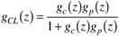
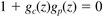
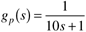
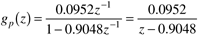
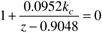
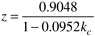
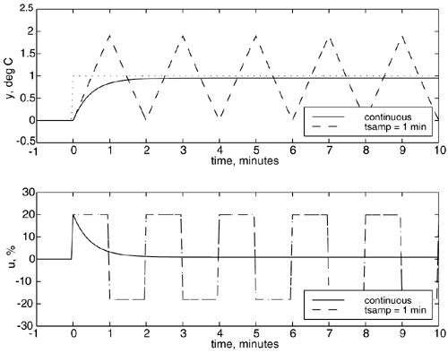

| [ Team LiB ] |
|
M16.3 Stability Analysis for Digital Control SystemsFor a standard discrete feedback control system, the closed-loop system is stable if the poles of the closed-loop transfer function are all inside the unit circle. The closed-loop transfer function is  so the roots of  must be less than 1 in magnitude. Example M16.1: Stability of a Discrete Control SystemConsider a first-order process, where the output is temperature (°C), the manipulated input is valve position (%), and the time unit is minutes.  If discretized with a sample time of 1 minute, the discrete-time process (the MATLAB Control Toolbox can be used to convert continuous to discrete models—see Module 4, Section M4.3) is  With a P-only controller, we must check the roots of  and solving for the root, we find  where the magnitude of the root is less than 1 for –1<kc<20.01. Since the process gain is positive, only positive values of the proportional gain make sense. This is result is verified in Figure M16-1, where the discrete P-only controller is unstable, while the continuous P-controller is stable with only a small amount of offset; kc = 20.01 for both the continuous and discrete P controllers. Figure M16-1. Comparison of setpoint responses for continuous and discrete P-only controllers on the first-order process. kc = 20.01 %/°C. Problem M16.1 (see the SIMULINK .mdl file in Appendix M16.1) Consider the first-order process given in Example M16.1. For a discrete PI controller, with tI = 10 minutes, find the proportional gain that just makes the closed-loop system unstable. Verify your analytical result via simulation; show plots similar to Figure M16-1. |
| [ Team LiB ] |
|